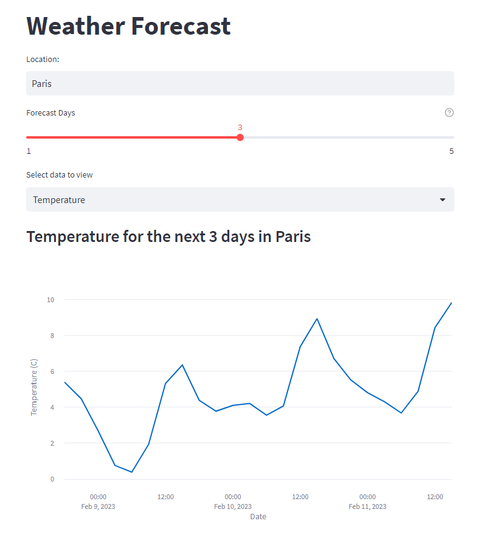

Hi I'm Simon

Here you'll find the projects I have been working on
Here you'll find the projects I have been working on
Cloud Portfolio Website
SOURCE CODEA website (this one), hosted on AWS, for my portfolio. The interesting bit was to deploy everything using IaC and implementing CI/CD.
Wordpress hosted on AWS
SOURCE CODE A Wordpress website powered by Nginx on an Ubuntu EC2 instance
The purpose of this project was to get myself used to set-up a production grade webserver, on Linux, running one or multiple WordPress applications. I manually deployed and configured that infrastructure many times, on Linux, until I was familiarized enough with the process and then, I scripted all the deployment.
Weather Forecast Webapp
SOURCE CODE  A web application that shows the weather for the next few days in any city, with a graph or with images.
Backend code calls an API, getting the datas for specific city and number of days. The data is processed and displayed on webapp with streamlit, as a graph with plotly or as images.
Certifications